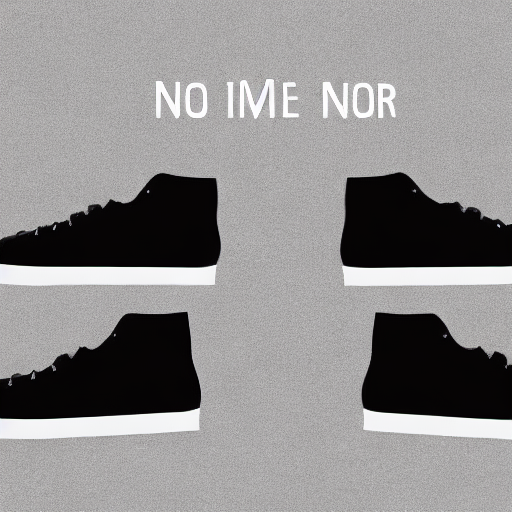

dt: 30/04/2025
First entry (last updated on 02/05/2025):
Experimenting with stable diffusion
I have hit the realization that my productivity happens to be directly proportional to the amount of hours I sleep (stretched over an entire week). Recently I was tinkering with stable diffusion. To those unaware, the question arises from the title — what even is stable diffusion?
Stable diffusion is a text-to-image open source model. You give it a prompt like “a cat riding a skateboard,” and it spits out an image that looks like someone painted exactly that. The reason for choosing it is that it's fast, local, and customizable.
The goal of the experiment was to generate stylish advertising banners, specific to a theme. Think “personalized ad posters,” but with AI. Why? I do love what promocraft is doing right now, but with the image-generation GPT provides right now, I mean, why would you use our tool now? Not to forget that though GPT is good at generating images and can generate advertisements if asked to (though that will indeed require a lot of prompting back and forth, also not to ignore you'd still have to add your logo to it, which can't be done by any model because of the fear that someone might be using copyrighted material), it will never be a complete swiss knife for marketing.
Here's the link to the repo for code if you want to try it or just browse: dhrm1k/
stable-diff-for-ads (Instructions in README).
I started with setting up the basics on my Google Colab. I used stable diffusion v1.5 — why? Because of the low hardware requirements it has (and sorry to say, but lol because that's what I researched upon). I prompted it to generate: "A stylish shoe advertisement with a clean background." Image below. There will be a GitHub repo link somewhere in the post. Ctrl-f github. I have not cleared the clutter I have made everywhere.

It's apparent it's nowhere near up to the mark. If I posted this somewhere, the company would fire me immediately. So the question was: how do I make it generate better images? The answer to that is fine-tuning. Fine-tuning refers to the process of training an already-existing pretrained model on a specific dataset to make it excel at those points of the dataset more. Think of it like this — the model had the capabilities already, I am not starting from scratch, I am just introducing it to new styles or contexts.
I had no idea how to fine-tune a model, so after a lot of questioning with GPT and Google, it became clear to me I had to use a technique called DreamBooth — but with LoRA. DreamBooth lets you personalize a model to new concepts, and LoRA is a lightweight way to apply those changes without needing a 24GB GPU from 2037.
An attempt to explain what LoRA does (I am not sure as of now that I myself quite understand it well): Imagine you have a pre-trained model — it's already been trained on a huge dataset, like millions of images, and it’s really good at general tasks. But now, you want to make it even better at something specific, like recognizing shoes. The problem is, this model has millions (or even billions) of parameters (weights), and training all of them from scratch takes a lot of time and computing power.
Instead of retraining everything, LoRA lets you adapt the model efficiently using a much smaller amount of data and computing power.
So I downloaded the `train_dreambooth_lora.py` script from Hugging Face’s diffusers repo. That script takes in a directory of images, a class prompt (like "photo of a shoe"), and a placeholder token. It fine-tunes just a few extra weights (not the full model) and gives you back a LoRA weights file you can load when generating.
For the dataset, I found something surprisingly decent on Hugging Face called AdImageNet. It's a collection of categorized ad posters — way better than anything I could've scraped together manually.
Of course, being me, I ran this on Google Colab’s free tier. And after maybe 3–4 training loops — boom, it stopped. A popup said I’d hit the usage cap. No restart button, no plea window. Just the end of the line.
That’s when I tried Modal. I'd heard about it in passing and decided to give it a shot. I was half-expecting it to ask for a credit card right away, but to my surprise — it didn’t. They just gave me $5 in free credits. (Apparently, I can get $30 more if I add a card, but I haven't done that yet.)
After some wrangling, I managed to get the fine-tuning script to run on Modal. It actually worked. And the result... was kind of better? I mean, it wasn’t a disaster, but it still wasn’t what I’d hoped for either.
Here's the updated image, same prompt: "A stylish shoe advertisement with clean background."
It's less generic than the first one, sure. But still not quite ad-agency ready. Might need to tweak training steps, or prompt engineering, or maybe try a better LoRA setup.
This post is still in progress and will be kept updated.
Note:
Today, I got to know that using a placeholder token might have improved the output quality. Understand it as that a placeholder token provides more context to the fine-tuned model. There's a lot to learn in this. I plan to experiment with this new method and come back again here.
Here's a song recommendation for you: I'm a fan of blink-182's music.